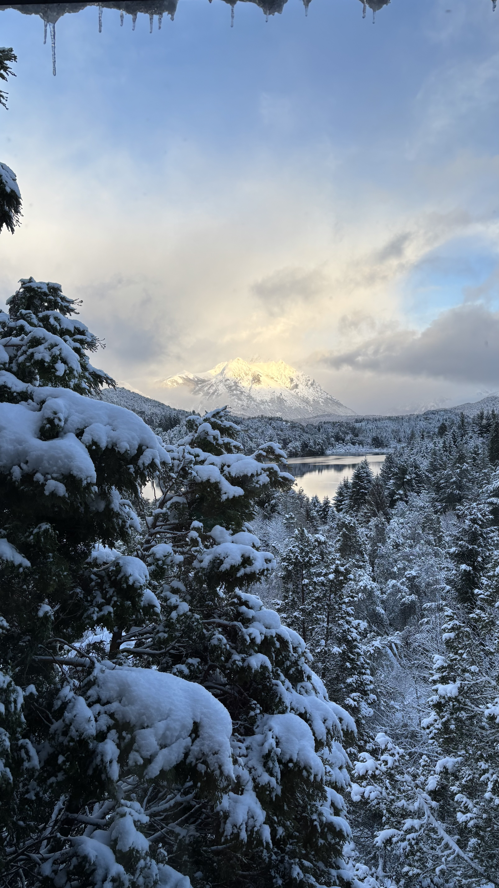
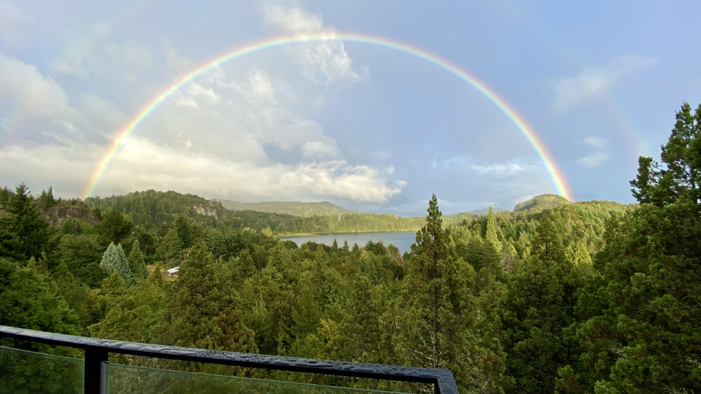
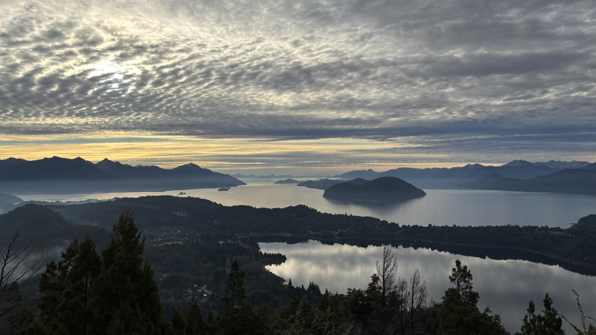
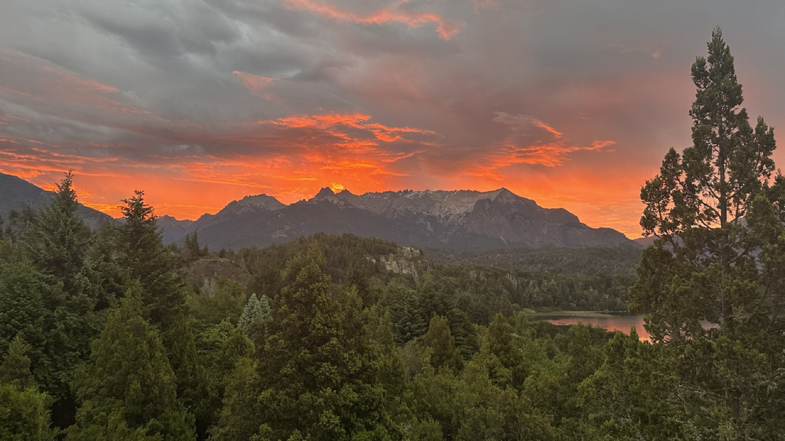
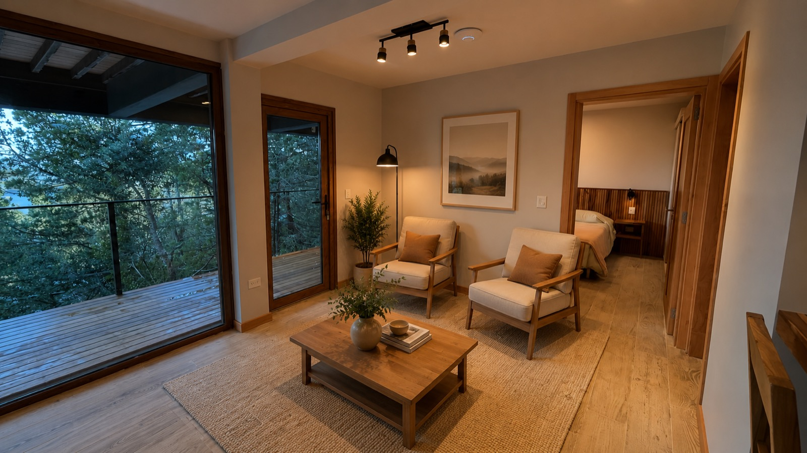
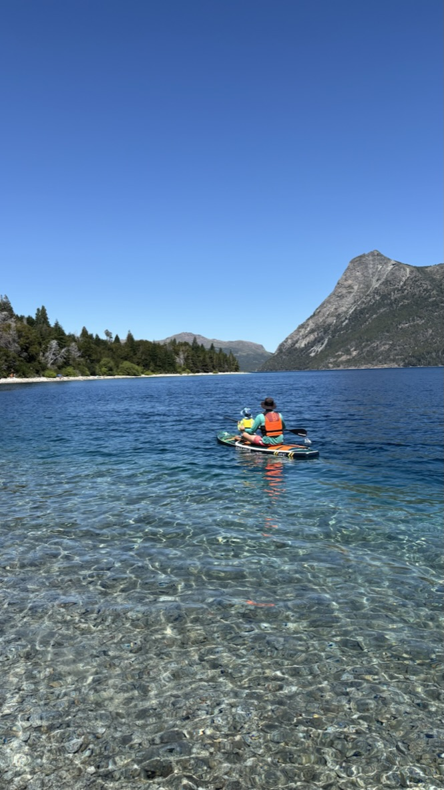
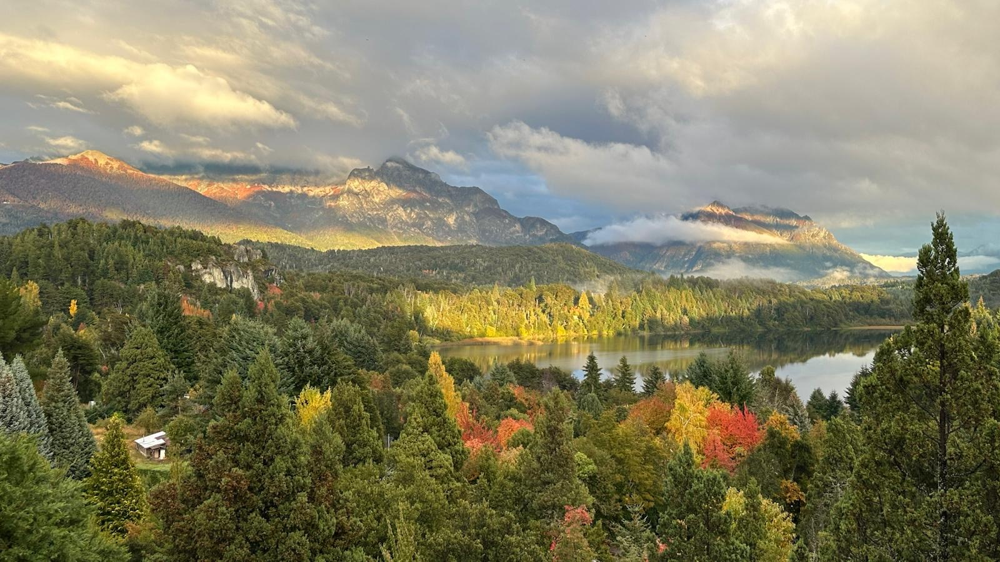
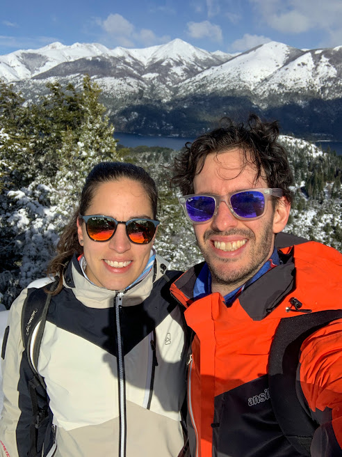

Invierno
Montañas nevadas y el lago en calma. La temporada de esquí en el Cerro Catedral, a minutos de casa, y las tardes de relax mirando el atardecer.



Cerro Campanario · Bariloche
Altué Lodge: un refugio de diseño patagónico con las vistas más buscadas de Bariloche, a un paso de tu puerta.
Reservá ahora
El Departamento
En pleno Cerro Campanario, a metros de una de las vistas más elogiadas del mundo, Altué Lodge es el alojamiento ideal para tus vacaciones en la Patagonia Argentina. Rodeado por un bosque de cipreses, radales y maitenes, y con una vista imponente a la Laguna El Trébol y a la Cordillera, mientras en su interior conserva la calidez de los materiales patagónicos.
Pensado para desconectar sin resignar comodidad: ambientes luminosos, deck privado con acceso al bosque, y un entorno silencioso que solo interrumpe el viento entre los árboles.
Galería
Cómo llegar
Altué Lodge se encuentra en el Cerro Campanario, a la altura del km 18 del Circuito Chico en Bariloche.
Las Cuatro Estaciones
Bariloche cambia de piel a lo largo del año. Cualquiera sea tu temporada, Altué Lodge tiene una vista distinta para regalarte.

Montañas nevadas y el lago en calma. La temporada de esquí en el Cerro Catedral, a minutos de casa, y las tardes de relax mirando el atardecer.

El deshielo despierta al bosque nativo. Días que se alargan, arcoíris después de la lluvia y el aire lleno de aroma a lupinos y tulipanes.

Días largos y cielo despejado. El lago en su mejor versión para navegar, disfrutar las playas, salir de trekking o simplemente desconectar.

El bosque se tiñe de dorados y rojizos: la luz más fotogénica del año, con el Circuito Chico en su máximo esplendor.

Quiénes somos
Somos Laura y Juan, los propietarios de Altué Lodge. Diseñamos y construimos este refugio en el Cerro Campanario con una idea simple: compartir el rincón de Bariloche que más amamos, con esa vista que a nosotros tampoco deja de sorprendernos.
Nos vas a encontrar siempre disponibles antes y durante tu estadía, para recomendarte el mejor circuito, los restaurantes que no te podés perder o el mejor lugar para ver el atardecer. Conocemos cada rincón de estas montañas y nos encanta compartirlo.
Lugares de Interés
Altué Lodge se encuentra sobre el mítico Circuito Chico, rodeado de los paisajes más fotografiados de la Patagonia argentina.
A pasos del depto.
La aerosilla hacia el mirador con una de las vistas más elogiadas del mundo, a metros de la puerta de casa.
5 min en auto
El recorrido escénico más famoso de Bariloche, entre lagos, bosques y miradores infinitos.
8 min en auto
Punto de partida de las excursiones náuticas a Isla Victoria y el Bosque de Arrayanes.
10 min en auto
Feria de artesanos, curanto patagónico al desnivel y aire de pueblo alpino.
8 min en auto
Una de las postales más clásicas del lago Nahuel Huapi, ideal para el atardecer.
20 min en auto
Teleférico y bar giratorio con vistas de 360° sobre la ciudad y el lago.
20 min en auto
El corazón histórico de la ciudad, chocolaterías y la Catedral Nuestra Señora del Nahuel Huapi.
10–15 min en auto
Cervecerías artesanales patagónicas repartidas entre el Cerro Campanario y el centro.
Contacto
“El mejor punto de partida para conocer todo lo que hace de Bariloche un lugar único.”